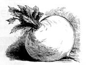
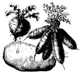

It's not just for tubers anymore.
Many of the most reliable winter-keeping vegetables are biennials plants that flower and set seed during their second growing season, which means they're naturally programmed for long storage.When we try to keep beets, cabbage and turnips, for example, to eat over the cold months, we're not breaking the rules of nature, but rather, cooperating with what you might call the vegetables' intentions - to live to see another spring so they can reproduce.
In addition to the sturdy root and cole vegetables that are obvious candidates for root cellaring, you can also store celery, leeks, brussels sprouts, peppers, grapes, escarole and citrus fruits in your cold room for periods ranging from two to eight weeks, depending on the type of vegetable and the conditions. Onions, garlic, squash, pumpkins, sweet potatoes and green tomatoes will last until spring if you keep them dry and cool. The place for these foods is in an unheated bedroom or a cool closet rather than in the kind of damp, cold place where apples and root vegetables keep best.
Whatever produce you stash in your keeping room, there are several rules of thumb that will help the food stay sound and healthy until you're ready to eat it.
1.TREAT all winter-keeping vegetables gently at all stages of harvest, preparation and storage. Bruised produce spoils sooner.
2. STORE only your best fruits and vegetables. Cut, bruised or diseased vegetables not only spoil more quickly but also encourage spoilage in neighboring foods.
3 . PICK PRODUCE at maturity-neither unripe nor overripe.
4. HARVEST fruits and vegetables during a dry spell if possible.
5. LEAVE VEGETABLES in the garden as long as possible, but keep an eye on the cooler fall weather and rescue them before black frost hits. Beets, for example, can stay out well past the first light frosts, but they should be dug before night temperatures dip to 24°F unless their exposed shoulders are well protected by mulch. Low temperatures in the autumn encourage vegetables to store more sugars and starches and less water, making them better keepers.
6. CHOOSE VARIETIES of vegetables that are well-adapted to storage: Long Season beets, Penn State Ballhead cabbage and Kennebec potatoes, for instance.
7. AFTER DIGGING root vegetables, chill them as promptly as possible. Don't leave them out in the sun.
To prepare root vegetables for winter storage, simply trim the green tops, leaving a one-inch stub (if left untrimmed, the top growth will decay and encourage the deterioration of adjacent roots. Take care not to cut the root flesh, and don't cut off root tips, either - any skin break invites spoilage.
Having done all this digging, selecting and trimming, you'll be glad to hear that you needn't wash vegetables before packing them away; in fact, it's better not to clean them. Just gently brush off any large clumps of soil that may cling to them.
Some root cellar owners simply pile their apples and root vegetables in crates or baskets. Others prefer to pack the produce in leaves, hay, sawdust or moss to help prevent drying, especially if using a basement room, which might not be as damp as an outdoor cellar. When we kept turnips, rutabagas, carrots and beets in a cold, dirt-floor cellar in the old house on our farm, we always packed them in dry leaves or sawdust. Sand can also be used for winter vegetable bedding, but it's not as easy to wash off as sawdust.
Certain vegetables must be cured in order to keep well. After clipping off their tops-leaving a one-inch stub-expose garlic and onions to the sun for a week, and then spread them loosely in shallow boxes or hang them in net bags or old panty hose.
Cure pumpkins and squash (except acorn squash in the sun for two weeks after picking them so they'll develop a hard rind. Always leave stems on.
Freshly harvested sweet potatoes should be cured in a warm, damp place-aim for 80-85°F and 90% humidity-to toughen their skins and encourage healing of small scratches. We cure our sweets in crates near the wood cookstove, with a damp newspaper spread over the top of each crate. Then, after seven to to days of curing, we wrap the potatoes individually in newspaper, sort them for size, pack them in cartons and keep them in a cool room.
Curing white potatoes isn't as essential as it is with sweet potatoes, but it's a good idea to spread the spuds out in a sheltered spot-about 60° - 75°F - for a two-week skin-toughening program before piling them into crates in the root cellar. Be certain to keep them in the shade, though; sun will turn potatoes green - and toxic.
Some leafy vegetables can be replanted in buckets of sand, soil or moss in the root cellar. We've had good luck with Chinese cabbage, escarole and leeks. Celery is a good candidate for this treatment too. Chinese cabbage has kept for us until February - the crunchy fresh inner leaves hidden inside an outer layer of wilted, paper-dry wrapper leaves.
Editor's note. The Bubels' 297-page hardcover book,Root Cellaring: The Simple No-Processing Way to Store Fruits and Vegetables (Rodale Press), is no longer in print, but copies may still be available through used-book stores or gardening outlets.
|
 |
 |
|